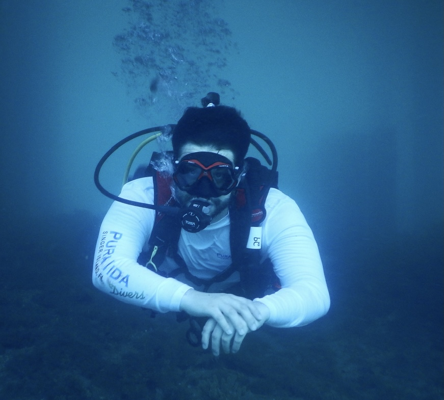

I'm a computer scientist turned evolutionary biologist, focusing on applying deep learning methods to genomics. My research interests include generative modeling and population genetics. Currently, I'm exploring using transfer learning as a tool to estimate genomic variation in populations with small sample sizes.
I'm a master's student at Ohio State University in the Carstens lab and am exploring PhD opportunities. My goal is to contribute to the field by bridging computational and biological approaches.
Outside of research, I enjoy hiking, reading, and spending time with family and friends.
Downloads
Download My CVContact Me
You can reach me via email at n.zuppas@osu.edu or follow my updates on GitHub.
